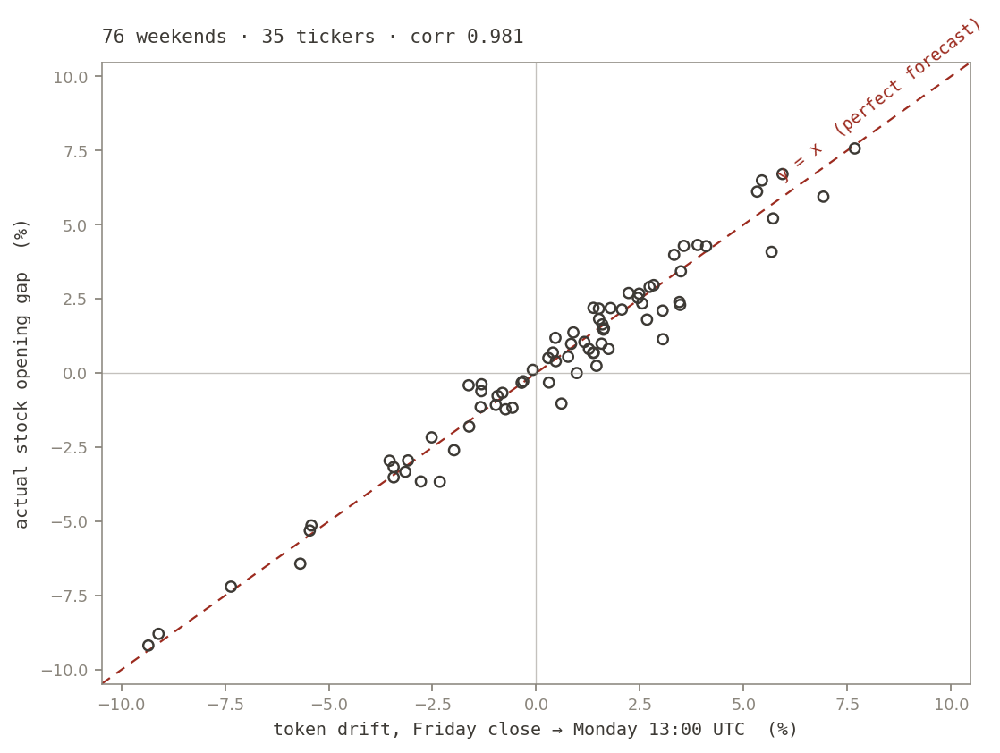

Tokenized copies of US stocks now trade around the clock on three venues. Each one is a measuring instrument pointed at the same true value — the exchange print — and nobody publishes their calibration certificates. So I ran the study myself.
By a process engineer (SPC) in semiconductor assembly & test: gauge qualification, applied to market venues instead of micrometers. Research only; no positions, no real money, and — per studies 04 and 05 — no strategy at the end of this.
A tokenized stock is a claim on (or a synthetic of) a real share, trading on venues that never close: Binance lists twenty as ordinary spot pairs, Backpack carries exchange-listed xStocks, and Arcus — the dYdX-built DEX on Robinhood Chain — quotes perpetuals against 43 names, backed 1:1 by Robinhood custody. Three instruments, one measurand.
The complication is the interesting part: the reference standard — the actual exchange print — only exists 32.5 hours a week. From Friday 20:00 UTC to Monday 13:30 UTC the true value is unobservable, and the gauges keep printing readings anyway. A gauge study here has two halves: when the reference exists, how far off is each instrument? And when it doesn't, do the readings mean anything at all?
Mean absolute deviation from the stock's hourly close over the last 40 shared market hours. Blank = venue doesn't list the name. Backpack lists only four of these.
| ticker | binance | arcus | backpack |
|---|---|---|---|
| SPY | 0.18% | 0.17% | — |
| QQQ | 0.32% | 0.31% | — |
| NVDA | 0.55% | 0.56% | — |
| MSFT | 0.61% | 0.55% | — |
| TSLA | 0.63% | 0.62% | — |
| GOOGL | 0.82% | 0.78% | — |
| META | 0.86% | 0.86% | — |
| AMD | 1.28% | 1.26% | — |
| MU | 1.62% | 1.64% | 2.67% |
| SNDK | 2.08% | 2.00% | 4.72% |
Two readings from this table. First, tracking error is a clean liquidity ladder: the index ETFs sit under 0.35%, mega-caps under 1%, and the thin names (SNDK, the newly listed MU tokens) drift past 2%. Second — and this is the gauge-study payoff — Binance and Arcus agree with each other to the second decimal on almost every row, despite being entirely different mechanisms (spot order book vs on-chain perpetual). When two independent instruments agree that closely, the residual against the reference is mostly the market's noise, not the instruments'. Backpack disagreeing by 2–5× on the same names is what a gauge failing repeatability looks like.
Binance names its tokenized stocks by appending B to the ticker: MUB
is Micron, TSLAB is Tesla. Build the venue map naively and four coins walk straight
through the naming convention wearing stock tickers:
| looks like | actually is | deviation from the stock |
|---|---|---|
| TR (Tootsie Roll) | TRB — Tellor | 61% |
| B (Barnes Group) | BB — BounceBit | 100% |
| DG (Dollar General) | DGB — DigiByte | 100% |
| BN (Brookfield) | BNB — BNB | 1,216% |
None of these were caught by inspection — the symbols look plausible and the charts render fine. They were caught because the tracking audit above runs on every instrument before any instrument gets believed. The factory twin is exact: a gauge with the wrong part number on it produces readings that are perfectly precise and mean nothing. You find it by measuring a reference, never by reading the label.
A counterfeit gauge is precise, confident, and wrong — which is why calibration against a reference is not optional paperwork.
Now the half of the week where the reference disappears. If the token venues are doing real price discovery, their Friday-to-Monday drift should predict the stock's opening gap. If they are a casino annex, it shouldn't. The test, with the leakage guard doing the real work: token price read at Monday 13:00 UTC — thirty minutes before the 13:30 open — against Friday's 20:00 UTC close, compared to the gap the stock actually printed. Every Binance-tokenized name, every weekend since listing: 76 pairs across 35 tickers.

| forecast | n | corr | slope | sign hit | MAE | naive MAE |
|---|---|---|---|---|---|---|
| token drift, pooled | 76 | 0.981 | 0.98 | 96% | 0.51% | 2.57% |
| minus SPY factor (idiosyncratic) | 58 | 0.980 | 0.94 | 100% | 0.49% | 2.28% |
The pooled number alone could be weekend beta — on a big weekend everything gaps together, and predicting "the market moved" is cheap. So the second row subtracts SPY's predicted and actual gap from every name and correlates what's left: the stock-specific part. It doesn't budge. The tokens price idiosyncratic news — which memory-sector name is moving, not just whether the tape is red — to half a percent, before the market opens.
The honest footnote: SPY's own token has traded through only two distinct weekends, so the idiosyncratic cut is cross-sectionally wide (29 names per weekend) but temporally thin. The claim as stated — across the weekends observed — is exactly as far as the data reaches. The sample grows by one weekend per week at zero cost, and the script below will recompute this table on any future date.
A 2.67% venue premium and a 0.98-correlation oracle look like the setup for an arbitrage paragraph. There isn't one. The wide venue is wide because nothing can cross it cheaply: RFQ spreads, custody hops, geographic restrictions, and a premium that converges precisely when the market opens and takes your carry with it. Studies 04 and 05 of this series document what happened the last two times a measured anomaly was mistaken for an edge. This study produces a calibration table, not a trade.
What transfers instead is the discipline, and it transfers whole:
| this study | the factory twin |
|---|---|
| Rank venues by tracking error before trusting any feed | Gauge qualification before the gauge enters production |
| Two independent venues agreeing → residual is process noise | Inter-instrument agreement isolating gauge vs process variation |
| Coin symbols passing as stock tickers | Mislabeled gauge: precise readings of the wrong thing |
| Reading the token at 13:00, not 13:31 | Blinding the measurement from the value it predicts |
| Weekend pricing with no exchange print | Measuring without a master standard, validated after the fact |
python3 scripts/venue_gauge.py # tracking table + counterfeit audit + weekend oracle
Every number above recomputes
live from Binance, Backpack, Arcus, and Yahoo Finance; results land in
data/venue_gauge_results.json and the 76 ticker-weekends in
data/venue_weekends.csv. Deviations are hourly closes over the last 40 shared
market hours, so the tracking table will drift with liquidity — that is the point of a
live gauge log.